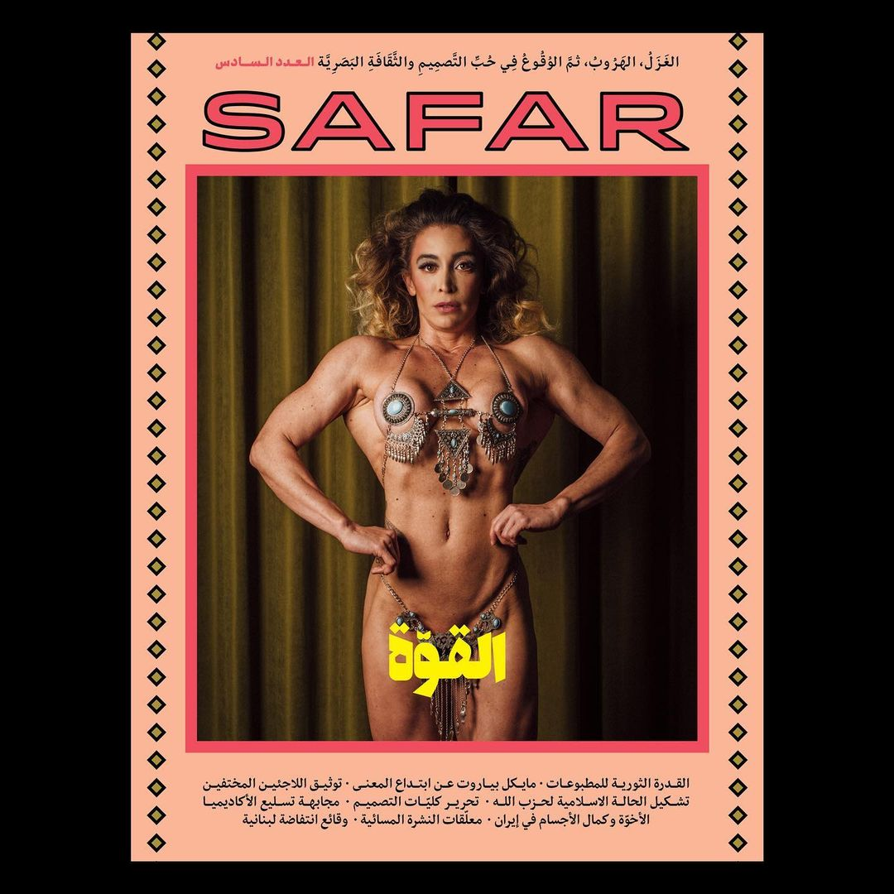

What is Studio Safar?
Founded in post-war Beirut, Studio Safar found itself in a new experimental playground of work, pleasure, and political tension. This post-war limbo pushed the Lebanese population towards more exploratory and risky experiments and investments which acted as a springboard for Studio Safar and other design and art studios. The studio was named after the Arabic "Safar", meaning travel, which conveys notions of exchange and communication across physical and linguistic barriers. Their interest in identity, multilingualism, and nostalgia is reflected in this exchange which guides the viewer towards a deeper understanding of the discussions and thoughts occurring within Lebanon and the Middle East Region.
Design Philosophy
Bridging the linguistic gap via a strong juxtaposition between historically significant visual design elements of the middle east and the contemporary context they exist in. This augmented dynamic encourages the audience to engage in collective thinking and discourse. By utilizing familiar design elements, they are able to communicate their ideas to a general demographic while still catering to the Arab diaspora informed by middle Eastern visual culture and heritage such as arabesque iconography and patterns.
Works
 AFAC's full rebrand: Business cards
AFAC's full rebrand: Business cards
 Crude group show book cover
Crude group show book cover
 The components of an exploding pressure cooker
The components of an exploding pressure cooker
 Irtijal Festival Brochure Cover
Irtijal Festival Brochure Cover
 Samandal Comics comic Cover
Samandal Comics comic Cover